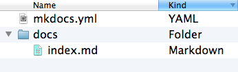
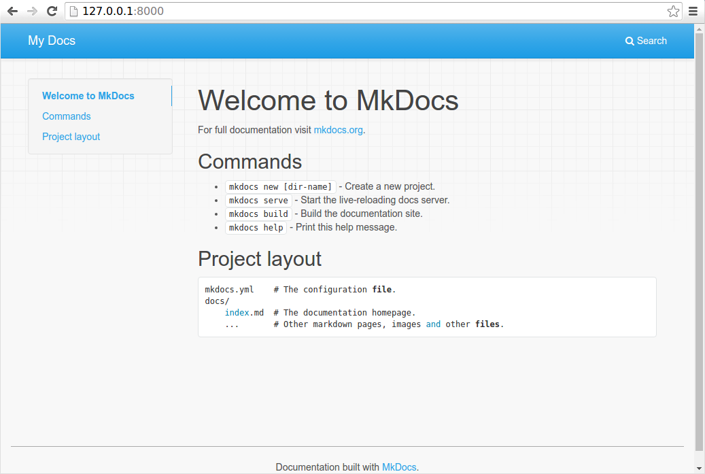
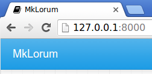
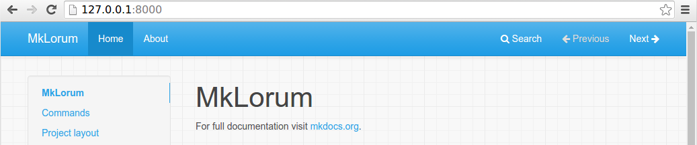
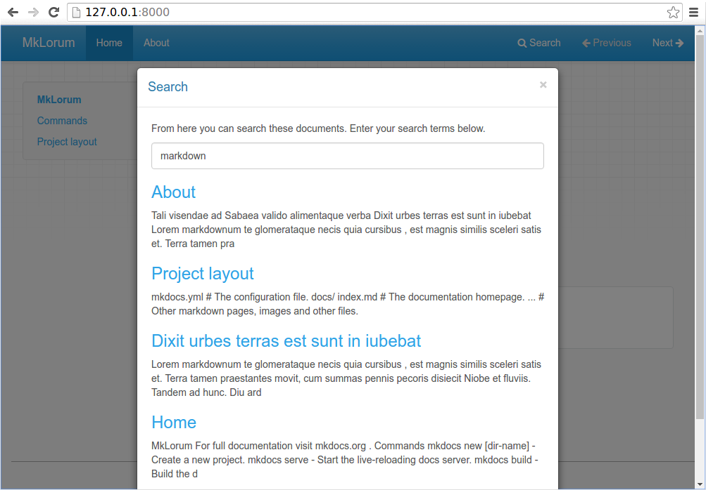
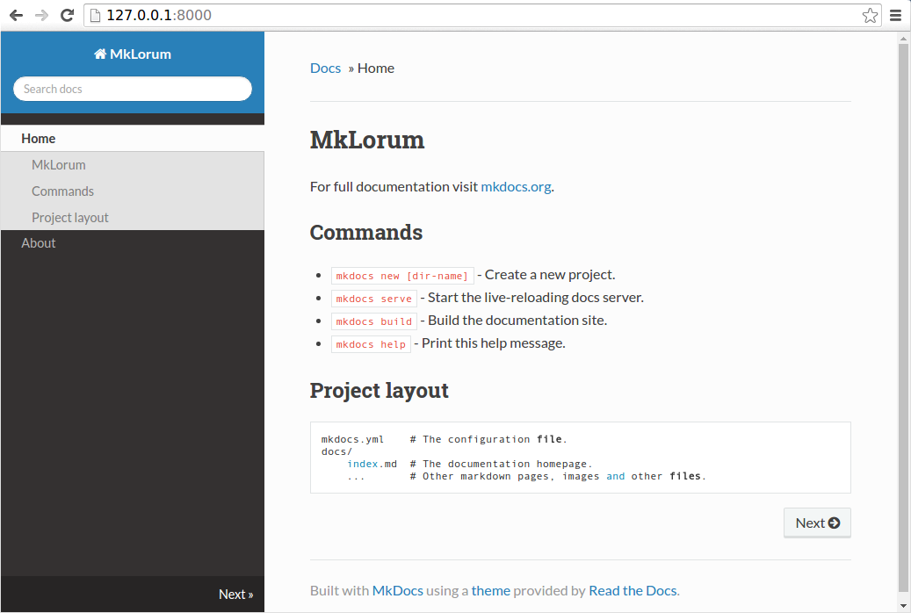

Getting Started with MkDocs
An introductory tutorial!
Installation
To install MkDocs, run the following command from the command line:
pip install mkdocsFor more details, see the Installation Guide.
Creating a new project
Getting started is super easy. To create a new project, run the following command from the command line:
mkdocs new my-project
cd my-projectTake a moment to review the initial project that has been created for you.

There's a single configuration file named mkdocs.yml, and a folder named
docs that will contain your documentation source files (docs is
the default value for the docs_dir configuration setting). Right now the docs
folder just contains a single documentation page, named index.md.
MkDocs comes with a built-in dev-server that lets you preview your documentation
as you work on it. Make sure you're in the same directory as the mkdocs.yml
configuration file, and then start the server by running the mkdocs serve
command:
$ mkdocs serve
INFO - Building documentation...
INFO - Cleaning site directory
INFO - Documentation built in 0.22 seconds
INFO - [15:50:43] Watching paths for changes: 'docs', 'mkdocs.yml'
INFO - [15:50:43] Serving on http://127.0.0.1:8000/Open up http://127.0.0.1:8000/ in your browser, and you'll see the default home page being displayed:

The dev-server also supports auto-reloading, and will rebuild your documentation whenever anything in the configuration file, documentation directory, or theme directory changes.
Open the docs/index.md document in your text editor of choice, change the
initial heading to MkLorum, and save your changes. Your browser will
auto-reload and you should see your updated documentation immediately.
Now try editing the configuration file: mkdocs.yml. Change the
site_name setting to MkLorum and save the file.
site_name: MkLorumYour browser should immediately reload, and you'll see your new site name take effect.

Note
The site_name configuration
option is the only required option in your configuration file.
Adding pages
Now add a second page to your documentation:
curl 'https://jaspervdj.be/lorem-markdownum/markdown.txt' > docs/about.mdAs our documentation site will include some navigation headers, you may want to
edit the configuration file and add some information about the order, title, and
nesting of each page in the navigation header by adding a nav
setting:
site_name: MkLorum
nav:
- Home: index.md
- About: about.mdSave your changes and you'll now see a navigation bar with Home and About
items on the left as well as Search, Previous, and Next items on the
right.

Try the menu items and navigate back and forth between pages. Then click on
Search. A search dialog will appear, allowing you to search for any text on
any page. Notice that the search results include every occurrence of the search
term on the site and links directly to the section of the page in which the
search term appears. You get all of that with no effort or configuration on your
part!

Theming our documentation
Now change the configuration file to alter how the documentation is displayed by
changing the theme. Edit the mkdocs.yml file and add a theme setting:
site_name: MkLorum
nav:
- Home: index.md
- About: about.md
theme: readthedocsSave your changes, and you'll see the ReadTheDocs theme being used.

Changing the Favicon Icon
By default, MkDocs uses the MkDocs favicon icon. To use a different icon, create
an img subdirectory in the docs directory and copy your custom favicon.ico
file to that directory. MkDocs will automatically detect and use that file as your
favicon icon.
Building the site
That's looking good. You're ready to deploy the first pass of your MkLorum
documentation. First build the documentation:
mkdocs buildThis will create a new directory, named site. Take a look inside the
directory:
$ ls site
about fonts index.html license search.html
css img js mkdocs sitemap.xmlNotice that your source documentation has been output as two HTML files named
index.html and about/index.html. You also have various other media that's
been copied into the site directory as part of the documentation theme. You
even have a sitemap.xml file and mkdocs/search_index.json.
If you're using source code control such as git you probably don't want to
check your documentation builds into the repository. Add a line containing
site/ to your .gitignore file.
echo "site/" >> .gitignoreIf you're using another source code control tool you'll want to check its documentation on how to ignore specific directories.
Other Commands and Options
There are various other commands and options available. For a complete list of
commands, use the --help flag:
mkdocs --helpTo view a list of options available on a given command, use the --help flag
with that command. For example, to get a list of all options available for the
build command run the following:
mkdocs build --helpDeploying
The documentation site that you just built only uses static files so you'll be
able to host it from pretty much anywhere. Simply upload the contents of the
entire site directory to wherever you're hosting your website from and
you're done. For specific instructions on a number of common hosts, see the
Deploying your Docs page.
Getting help
See the User Guide for more complete documentation of all of MkDocs' features.
To get help with MkDocs, please use the GitHub discussions or GitHub issues.